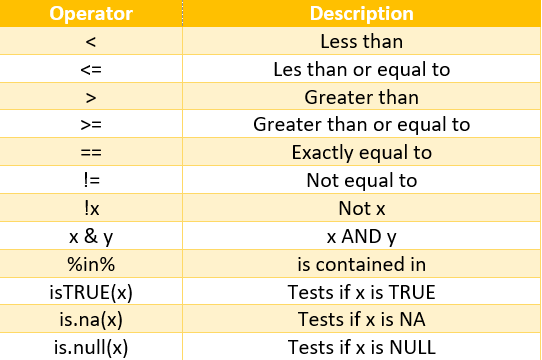
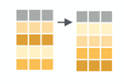
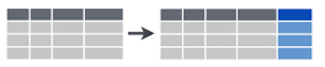

Lab 2.1 - Data transformation (I): Create new variables, filter, select and organize data
Lab 2.1 - Data transformation (I): Create new variables, filter, select and organize data
111022 | Data management and visualization with R
1 Introduction
As we mentioned in the introductory lessons, the tidyverse
is a set of packages created by Hadley Wickham, chief scientist at
RStudio. The tidyverse was created to facilitate data analysis. It
consists of a set of packages for importing and reading data, for
organizing and modifying data, for analysis and modeling, and for
displaying and communicating the results. In fact, there is a package
for each of the main steps in the data analysis pipeline. The great
advantage of the tidyverse approach is that all these packages share a
common structure and grammar, making it easier to learn them and combine
them into a data analysis workflow.

In this lab we are going to cover the basics of data
manipulation with dplyr. dplyris a
package that focuses on data transformation, i.e. it will allow us to
start handling our data sets once they are tidy, so that we can create
new variables, filter those observations of interest, create summaries,
etc. Although the “transform” stage of the data science pipeline is
usually not the first one (we first need to import and tidy the data),
dplyris the best place to start from, since it probably is
the easiest of the tidyverse packages to understand.
Before we start, bear in mind that:
dplyr(nortidyrorpurrror any other package in thetidyverse) does not do anything that can’t be done with base R code,applyfamily functions,forloops or other packages.It is designed to be more efficient (in time consume and code lines), easier to read and easier to use. It is more intuitive to use, specially for beginners (it may require some adaptation if you are used to base R code).
It is valid mostly for
data.frames. For other formats (matrices, arrays)plyrcan be used instead.
2 Our data
Throughout the course we are going to use several data frames, that
you will find in the RStudio Cloud project of each lab, within the
data folder. In this case, we are going to work with data
from the 3rd Spanish National Forest Inventory (SNFI), specifically with
5 data frames taht correspond to those plots within the four provinces
of Catalonia (Barcelona, Lleida, Girona and Tarragona). The SNFI is a
monitoring and evaluation project providing robust, reliable information
regarding forest ecosystems and their trends. It consists on a series of
permanent plots located in a grid of 1x1 km across all the Spanish
territory, which are remeasured every 10-12 years. In each plot, some
general characteristics are gathered (canopy cover, three main dominant
species, soil texture, date of measurement…), but also each tree in the
plot is located and measured (DBH and height). The information is stored
in different data frames:
plots[11858 x 15]: contains general information for all the plots measured in the 3rd SNF in Catalonia. Each row corresponds to an observation (a plot), and each column is a variable.trees[111756 x 12]: all trees with dbh > 7.5 cm measured in both the second and the third forest inventorysize_distrib[14778 x 15]: number of trees per hectare in each plot, per species and size class, in the 3rd SNFIcoordinates[11858 x 6]: X and Y UTM coordinates of each plot in the SNFI3leaf[10447 x 3]: leaf biomass and carbon content for those SNFI3 plots where they were available .sps_codes[190 x 4]: name of the species and associated codeprov_names[52 x 2]: code and name of all the Spanish provinces
2.1 Let’s have a look at the data
It is important that we get to know a little bit our data sets before
starting to work with them. To load the data frames you need to type
load("data/data_SNFI3.Rdata") or click on the
“data_SNFI3.Rdata” file within the “data” folder in the
Files tab of RStudio. You will see tthat the 7 data frames
have been added to your environment. To have a look at them we just need
to type their name:
## # A tibble: 11,858 × 17
## Code Province Class Subclass FccTot FccArb IniDate IniTime
## <fct> <fct> <fct> <fct> <int> <int> <date> <dttm>
## 1 080001 08 A 1 80 70 2001-07-09 2001-07-09 09:44:00
## 2 080002 08 A 1 80 70 2001-08-06 2001-08-06 09:18:58
## 3 080003 08 A 1 90 80 2001-08-06 2001-08-06 12:08:09
## 4 080004 08 A 1 90 50 2001-07-09 2001-07-09 13:23:23
## 5 080005 08 A 1 70 60 2001-08-03 2001-08-03 09:11:28
## 6 080006 08 A 1 90 90 2001-08-01 2001-08-01 13:00:33
## 7 080007 08 A 1 90 90 2001-08-07 2001-08-07 10:08:15
## 8 080008 08 A 1 70 60 2001-08-03 2001-08-03 12:12:03
## 9 080009 08 A 1 80 70 2001-08-02 2001-08-02 09:00:16
## 10 080010 08 A 1 80 80 2001-06-14 2001-06-14 12:34:21
## # ℹ 11,848 more rows
## # ℹ 9 more variables: FinDate <date>, FinTime <dttm>, Rocks <int>,
## # Texture <int>, OrgMat <int>, SoilPh <int>, PhDate <date>,
## # Dom_sp_IFN2 <fct>, Dom_sp_IFN3 <fct>## # A tibble: 111,756 × 10
## Code Province Species Direction Dist N DC DBH_3 DBH_2 Height_3
## <fct> <fct> <fct> <dbl> <dbl> <dbl> <fct> <dbl> <dbl> <dbl>
## 1 080001 08 022 7 8.3 31.8 20 20.3 18.9 9
## 2 080002 08 476 38 9.1 31.8 35 34 32.4 9
## 3 080003 08 021 25 7 31.8 25 24.8 17.6 11
## 4 080004 08 021 28 8.89 31.8 15 16.8 12.6 9.5
## 5 080006 08 021 19 11.2 14.1 35 34.0 30.9 13
## 6 080007 08 021 32 12 14.1 35 33.1 28.2 10
## 7 080008 08 243 40 7.8 31.8 15 15 13.2 6
## 8 080009 08 045 16 5.09 31.8 20 17.5 15.3 7
## 9 080010 08 243 47 26.9 5.09 65 67.4 66.8 16.5
## 10 080013 08 022 44 2.7 127. 15 15.1 12.6 9.5
## # ℹ 111,746 more rows## # A tibble: 14,778 × 15
## Code Species CD_10 CD_15 CD_20 CD_25 CD_30 CD_35 CD_40 CD_45 CD_50 CD_55
## <fct> <fct> <dbl> <dbl> <dbl> <dbl> <dbl> <dbl> <dbl> <dbl> <dbl> <dbl>
## 1 080001 022 0 159. 31.8 111. 60.1 19.2 5.09 0 0 0
## 2 080002 021 0 0 0 0 0 74.2 28.3 63.7 0 0
## 3 080002 022 0 0 0 173. 31.8 0 0 0 0 0
## 4 080002 476 0 0 0 0 0 31.8 0 0 0 0
## 5 080003 021 0 0 0 31.8 0 0 0 0 5.09 0
## 6 080003 022 0 127. 0 0 46.0 127. 0 14.1 0 0
## 7 080004 021 0 31.8 0 0 31.8 0 0 0 0 0
## 8 080005 071 0 0 0 14.1 5.09 31.8 0 0 0 0
## 9 080005 243 0 0 14.1 0 14.1 0 5.09 0 0 0
## 10 080005 278 0 286. 31.8 0 0 31.8 0 0 0 0
## # ℹ 14,768 more rows
## # ℹ 3 more variables: CD_60 <dbl>, CD_65 <dbl>, CD_70 <dbl>## # A tibble: 11,766 × 5
## Code Province Class CoorX CoorY
## <fct> <fct> <fct> <int> <int>
## 1 080001 08 A 402000 4684000
## 2 080002 08 A 400000 4683000
## 3 080003 08 A 401000 4683000
## 4 080004 08 A 402000 4683000
## 5 080005 08 A 400000 4682000
## 6 080006 08 A 397000 4681000
## 7 080007 08 A 399000 4681000
## 8 080008 08 A 401000 4681000
## 9 080009 08 A 402000 4681000
## 10 080010 08 A 394000 4680000
## # ℹ 11,756 more rows## # A tibble: 10,447 × 3
## Code leaf_biomass leaf_carbon
## <chr> <dbl> <dbl>
## 1 080001 4.99 2.58
## 2 080002 2.39 1.23
## 3 080003 2.97 1.53
## 4 080004 0.395 0.200
## 5 080005 1.34 0.644
## 6 080006 4.03 2.07
## 7 080007 5.97 3.04
## 8 080008 0.928 0.452
## 9 080009 3.85 1.94
## 10 080010 1.54 0.758
## # ℹ 10,437 more rows## # A tibble: 52 × 2
## Province Prov_name
## <chr> <chr>
## 1 01 Araba
## 2 02 Albacete
## 3 03 Alacant
## 4 04 Almeria
## 5 05 Avila
## 6 06 Badajoz
## 7 07 Illes Balears
## 8 08 Barcelona
## 9 09 Burgos
## 10 10 Caceres
## # ℹ 42 more rows## # A tibble: 190 × 4
## Name Common_Name CodeIFN2 CodeIFN3
## <chr> <chr> <fct> <fct>
## 1 Heberdenia bahamensis Aderno 001 001
## 2 Amelanchier ovalis Guillomo 002 002
## 3 Frangula alnus Arraclán 003 003
## 4 Rhamnus alaternus Aladierno 004 004
## 5 Euonymus europaeus Bonetero 005 005
## 6 Myrtus communis Mirto 006 006
## 7 Acacia spp. Acacia 007 007
## 8 Phillyrea latifolia Agracejo 008 008
## 9 Cornus sanguinea Cornejo 009 009
## 10 <NA> <NA> 010 010
## # ℹ 180 more rowsMaybe you have noticed that, when printing the data sets, R says they
are a tibble. So, what are tibbles? Well,
tibbles are the specific type of data frames that the
tidyverse uses. All tibbles are data frames, but not all
data frames are tibbles. In fact if we see the class of our data sets,
we see they ARE data frames.
## [1] "tbl_df" "tbl" "data.frame"The only difference is that tibbles have all the
properties of data frames, but behave in a way that facilitates data
inspection and understanding. Data inspection must
ALWAYS be the first thing we do before starting any
kind of analysis. Understanding data is crucial to succeed, otherwise we
can have surprises, such as a variable not being correctly imported, or
a corrupt data frame. The glimpse function in the tidyverse
is perhaps the most informative way to know what our data looks like at
a glance. Let’s have a look at the plots and
trees data frames, which are the ones we will use in this
lab:
## Rows: 11,858
## Columns: 17
## $ Code <fct> 080001, 080002, 080003, 080004, 080005, 080006, 080007, 08…
## $ Province <fct> 08, 08, 08, 08, 08, 08, 08, 08, 08, 08, 08, 08, 08, 08, 08…
## $ Class <fct> A, A, A, A, A, A, A, A, A, A, A, A, A, A, A, A, A, A, A, A…
## $ Subclass <fct> 1, 1, 1, 1, 1, 1, 1, 1, 1, 1, 1, 1, 1, 1, 1, 1, 1, 1, 1, 1…
## $ FccTot <int> 80, 80, 90, 90, 70, 90, 90, 70, 80, 80, 70, 100, 90, 90, 9…
## $ FccArb <int> 70, 70, 80, 50, 60, 90, 90, 60, 70, 80, 60, 95, 90, 80, 80…
## $ IniDate <date> 2001-07-09, 2001-08-06, 2001-08-06, 2001-07-09, 2001-08-0…
## $ IniTime <dttm> 2001-07-09 09:44:00, 2001-08-06 09:18:58, 2001-08-06 12:0…
## $ FinDate <date> 2001-07-09, 2001-08-06, 2001-08-06, 2001-07-09, 2001-08-0…
## $ FinTime <dttm> 2001-07-09 11:20:14, 2001-08-06 10:52:47, 2001-08-06 13:4…
## $ Rocks <int> 3, 4, 3, 3, 4, 3, 3, 4, 4, 5, 5, 2, 2, 3, 2, 4, 3, 4, 5, 3…
## $ Texture <int> 3, 3, 3, 3, 3, 3, 3, 3, 3, NA, NA, 3, 3, 3, 2, 2, 3, 3, NA…
## $ OrgMat <int> 1, 1, 1, 1, 1, 1, 1, 1, 1, NA, NA, 1, 1, 2, 2, 1, 2, 1, NA…
## $ SoilPh <int> 5, 5, 6, 6, 6, 5, 5, 6, 6, NA, NA, 6, 5, 6, 4, 5, 6, 6, NA…
## $ PhDate <date> 2001-07-09, 2001-08-06, 2001-08-06, 2001-07-09, 2001-08-0…
## $ Dom_sp_IFN2 <fct> 022, 021, 022, 021, 071, 021, 021, 243, 045, 071, NA, 021,…
## $ Dom_sp_IFN3 <fct> 022, 021, 022, 021, 071, 021, 021, 243, 045, 071, NA, 021,…## Rows: 111,756
## Columns: 10
## $ Code <fct> 080001, 080002, 080003, 080004, 080006, 080007, 080008, 0800…
## $ Province <fct> 08, 08, 08, 08, 08, 08, 08, 08, 08, 08, 08, 08, 08, 08, 08, …
## $ Species <fct> 022, 476, 021, 021, 021, 021, 243, 045, 243, 022, 021, 021, …
## $ Direction <dbl> 7, 38, 25, 28, 19, 32, 40, 16, 47, 44, 13, 9, 9, 25, 199, 6,…
## $ Dist <dbl> 8.3, 9.1, 7.0, 8.9, 11.2, 12.0, 7.8, 5.1, 26.9, 2.7, 8.9, 1.…
## $ N <dbl> 31.8, 31.8, 31.8, 31.8, 14.1, 14.1, 31.8, 31.8, 5.1, 127.3, …
## $ DC <fct> 20, 35, 25, 15, 35, 35, 15, 20, 65, 15, 20, 30, 45, 20, 35, …
## $ DBH_3 <dbl> 20, 34, 25, 17, 34, 33, 15, 18, 67, 15, 19, 28, 46, 20, 34, …
## $ DBH_2 <dbl> 19, 32, 18, 13, 31, 28, 13, 15, 67, 13, 14, 25, 45, 20, 30, …
## $ Height_3 <dbl> 9.0, 9.0, 11.0, 9.5, 13.0, 10.0, 6.0, 7.0, 16.5, 9.5, 11.5, …2.2 A more in depth view on the datasets we will use
Since we are going to use mostly the data sets trees and
plots in this lab, let’s explain the variables they contain
in more depth:
PLOTS
This data frame contains information on each of the plots measured in the National Forest Inventory. Note that it has 11858 rows, which is the numer of plots that were measured in Catalonia.
Code(factor): the code of the permanent plot.Province(factor): the province in which the plot is located. For Catalonia the codes are:- Barcelona: “08”
- Girona: “17”
- Lleida: “25”
- Tarragona “43” You can check the rest of the codes for Spain in the
prov_namesdata frame.
Class(factor): type of plot, depending if it was measured in SNFI2 or not (we will not use this variable)Subclass(factor): subtype of plot, depending if it was measured in IFN2 or not (we will not use this variable)FccTot(integer): total canopy cover in the plotFccArb(integer): tree canopy cover in the plotIniDate(date): date at which the plot was started to measureIniTime(datetime): date and time at which the plot was started to measureFinDate(date): date at which the plot was finished to measureFinTime(datetime): time at which the plot was finished to measureRocks(integer): proportion of rocks in surface of the plotTexture(integer): soil textureOrgMat(integer): amount of organic matter in the plotSoilPh(integer): pH of the soil in the plotPhDate(date): date at which pH was measuredDom_sp_IFN2(Factor): dominant species in the plot in the SNFI2Dom_sp_IFN3(Factor):dominant species in the plot in the SNFI3
TREES
The trees data frame contains information on each of the
trees measured in the National Forest Inventory. You can see that it has
many more rows than plots. This are the variables it
contains:
Code(factor): the code of the permanent plot in which the tree is locatedProvince(factor): the province in which the plot (and therefore the tree) is locatedSpecies(factor): the specific identity of the tree, as a code. You can find the meaning of each code here (pages 24-28), or in thesps_codesdata frameDirection(numeric): the angle from the center of the plot to the tree, measured in centesimal degrees (so takes values from 0 to 400)Dist(numeric): the distance from the center of the plot to the tree, in metersN(numeric): number of trees per hectare that each tree represents (since the plots are smaller than 1 ha and not all of them have the same size, it is the conversion factor that allows us to do calculations per hectare and compare results across plots)DC(factor): diameter class, in centimeters and grouped in 5 cm classesDBH_3(double): tree diameter at breast height, in centimeters, as measured in SNFI3DBH_2(double): tree diameter at breast height, in centimeters, as measured in SNFI2Height_3(double): tree height, in meters, as measured in SNFI3
3  Data
transformation with dplyr
Data
transformation with dplyr
dplyr is a essentially a grammar for data
manipulation, providing a consistent set of verbs
(i.e. functions) that help you solve the most common data manipulation
challenges.
The 5 main verbs of dplyr are:
filter: keep/select the rows that match a given conditionselect: keep columns by namearrange: sort rows acording to a given variablemutate: transform existent variables or create new onessummarise: do some summary statistics and reduce data
Most of the tidyverse verbs/functions share certain elements in
common and dplyr is certainly not an exception. The basic
syntax works like this:
- The first argument is ALWAYS the data frame
- The rest of arguments specify what to do with the data, and depend on the specific verb.
- Output is always another data frame (
tbl_dfordata.frame). - Unless we are assigning (
<-) the result into an object, functions never modify the original data.
In this course we are going to cover the main verbs of
dplyr, but this is only a small subset of what it can do.
Just a quick check into its cheatsheet
or the dplyr
website reveals a wide range of possibilities:

3.1 Selecting rows with
filter
Use filter() to choose rows/cases/observations where a
given condition(s) is TRUE. The first argument in
filteris the dataframe we want it to apply to, and the rest
are the criteria for the filtering. If there are several criteria, they
can be separated by commas:
 > The key
aspect of
> The key
aspect of filter lies on building the condition
that must be met. Doing so involves the use of
logical operators:

Let’s see a few basic examples applied to the trees
table:
- Get trees taller than 6 meters:
## # A tibble: 100,247 × 10
## Code Province Species Direction Dist N DC DBH_3 DBH_2 Height_3
## <fct> <fct> <fct> <dbl> <dbl> <dbl> <fct> <dbl> <dbl> <dbl>
## 1 080001 08 022 7 8.3 31.8 20 20.3 18.9 9
## 2 080002 08 476 38 9.1 31.8 35 34 32.4 9
## 3 080003 08 021 25 7 31.8 25 24.8 17.6 11
## 4 080004 08 021 28 8.89 31.8 15 16.8 12.6 9.5
## 5 080006 08 021 19 11.2 14.1 35 34.0 30.9 13
## 6 080007 08 021 32 12 14.1 35 33.1 28.2 10
## 7 080009 08 045 16 5.09 31.8 20 17.5 15.3 7
## 8 080010 08 243 47 26.9 5.09 65 67.4 66.8 16.5
## 9 080013 08 022 44 2.7 127. 15 15.1 12.6 9.5
## 10 080014 08 021 13 8.89 31.8 20 19.2 14.2 11.5
## # ℹ 100,237 more rows- Get trees in Tarragona (province 43):
## # A tibble: 9,693 × 10
## Code Province Species Direction Dist N DC DBH_3 DBH_2 Height_3
## <fct> <fct> <fct> <dbl> <dbl> <dbl> <fct> <dbl> <dbl> <dbl>
## 1 430003 43 024 6 9.69 31.8 30 28.1 20.4 10.5
## 2 430006 43 023 24 9.69 31.8 30 28.2 23.2 10.5
## 3 430007 43 024 0 8.8 31.8 30 30.4 27.8 10.5
## 4 430009 43 024 15 9.89 31.8 30 30.4 30.4 11
## 5 430010 43 024 33 12.1 14.1 45 47.2 42.0 13.5
## 6 430011 43 044 1 2.09 127. 10 11.0 9.65 6
## 7 430012 43 024 31 13 14.1 35 33.0 26.5 12.5
## 8 430013 43 024 80 1.89 127. 40 38.4 35.7 11
## 9 430014 43 025 4 4.3 127. 15 14.0 11.2 5
## 10 430015 43 024 22 11.2 14.1 30 31.2 27.4 9
## # ℹ 9,683 more rowsNote that you need the double
==to create the condition. the difference between==and=was explained in the introductory lessons, but you can find a good thread about this issue in this forum (I told you that you can find all the answers in R forums ;-)
- Get trees in diametric classes 45 and 70:
## # A tibble: 2,552 × 10
## Code Province Species Direction Dist N DC DBH_3 DBH_2 Height_3
## <fct> <fct> <fct> <dbl> <dbl> <dbl> <fct> <dbl> <dbl> <dbl>
## 1 080016 08 071 9 26.9 5.09 45 46.0 45 19
## 2 080113 08 021 19 11.1 14.1 70 72.6 70.7 20.9
## 3 080686 08 042 43 7.09 31.8 45 44.3 42.5 12.5
## 4 080721 08 042 16 15.8 5.09 45 46.2 39.8 17.5
## 5 080743 08 042 3 9.69 31.8 45 46.1 40.7 25.5
## 6 081271 08 024 93 10.8 14.1 45 44.0 39.0 17.3
## 7 081278 08 024 87 10.1 14.1 45 44.6 38.9 15.1
## 8 081354 08 026 16 8.6 31.8 45 43.4 30.8 16.9
## 9 081402 08 054 51 5.19 31.8 70 102. 95.5 17.7
## 10 081943 08 024 1 10.3 14.1 45 43.2 33.8 11.7
## # ℹ 2,542 more rowsYou see here how the %in% operator works. It will get
any value that is included in a vector of values
EXERCISE 1:
1.1 Try now doing the following:
filter(trees, Height_3 >= 6)
Why is the result different from the example 1 we have done
above?
Which of the two outputs has more rows on it?
Let’s find those plots in SNFI3 that:
1.2 Are located either in Barcelona (08) or Girona
(17)
Hint: we need to use now the plots data frame
filter()filter(plot,)filter(plot,Province %in% c("08", "17"))1.3 Were measured in January of 2001
1.4 Select those plots which took more than 2 hours
to measure (7200s) Hint: we can include an arithmetic operation
between two variables within a filter function
3.2 Selecting columns
with select
select is the function in dplyr to choose
variables (i.e., columns) from a data frame. Again, the first argument
of select is the data frame to which we want to apply the
function, and the subsequent arguments are the variables to select. It
will only keep those that are mentioned.

Let’s see some examples:
- Selecting a single column/variable:
## # A tibble: 111,756 × 1
## DBH_3
## <dbl>
## 1 20.3
## 2 34
## 3 24.8
## 4 16.8
## 5 34.0
## 6 33.1
## 7 15
## 8 17.5
## 9 67.4
## 10 15.1
## # ℹ 111,746 more rows- Selecting all columns but the targeted one. The
-operator excludes the targeted variable so that we only keep the remaining variables:
## # A tibble: 111,756 × 9
## Province Species Direction Dist N DC DBH_3 DBH_2 Height_3
## <fct> <fct> <dbl> <dbl> <dbl> <fct> <dbl> <dbl> <dbl>
## 1 08 022 7 8.3 31.8 20 20.3 18.9 9
## 2 08 476 38 9.1 31.8 35 34 32.4 9
## 3 08 021 25 7 31.8 25 24.8 17.6 11
## 4 08 021 28 8.89 31.8 15 16.8 12.6 9.5
## 5 08 021 19 11.2 14.1 35 34.0 30.9 13
## 6 08 021 32 12 14.1 35 33.1 28.2 10
## 7 08 243 40 7.8 31.8 15 15 13.2 6
## 8 08 045 16 5.09 31.8 20 17.5 15.3 7
## 9 08 243 47 26.9 5.09 65 67.4 66.8 16.5
## 10 08 022 44 2.7 127. 15 15.1 12.6 9.5
## # ℹ 111,746 more rows- Select several columns:
## # A tibble: 111,756 × 2
## DBH_2 DBH_3
## <dbl> <dbl>
## 1 18.9 20.3
## 2 32.4 34
## 3 17.6 24.8
## 4 12.6 16.8
## 5 30.9 34.0
## 6 28.2 33.1
## 7 13.2 15
## 8 15.3 17.5
## 9 66.8 67.4
## 10 12.6 15.1
## # ℹ 111,746 more rows- Selecting a range of columns. The
:operator allows referencing a set of contiguous columns so that all variables contained in that range will be included:
## # A tibble: 111,756 × 5
## Code Province Species Direction Dist
## <fct> <fct> <fct> <dbl> <dbl>
## 1 080001 08 022 7 8.3
## 2 080002 08 476 38 9.1
## 3 080003 08 021 25 7
## 4 080004 08 021 28 8.89
## 5 080006 08 021 19 11.2
## 6 080007 08 021 32 12
## 7 080008 08 243 40 7.8
## 8 080009 08 045 16 5.09
## 9 080010 08 243 47 26.9
## 10 080013 08 022 44 2.7
## # ℹ 111,746 more rowsWe can combine
-and:to exclude a range of columns, though we must use avectorto specify the range using parenthesis:
## # A tibble: 111,756 × 5
## N DC DBH_3 DBH_2 Height_3
## <dbl> <fct> <dbl> <dbl> <dbl>
## 1 31.8 20 20.3 18.9 9
## 2 31.8 35 34 32.4 9
## 3 31.8 25 24.8 17.6 11
## 4 31.8 15 16.8 12.6 9.5
## 5 14.1 35 34.0 30.9 13
## 6 14.1 35 33.1 28.2 10
## 7 31.8 15 15 13.2 6
## 8 31.8 20 17.5 15.3 7
## 9 5.09 65 67.4 66.8 16.5
## 10 127. 15 15.1 12.6 9.5
## # ℹ 111,746 more rowsWe can also leverage some special functions specifically design to work with strings to enhance column extraction:
starts_with(x): names that start with x.
ends_with(x): names that end with x.
contains(x): selects all variables whose name contains x.
matches(x): selects all variables whose name contains the regular expression x.
num_range("x", 1:5, width = 2): selects all variables (numerically) from x01 to x05
one_of ("x", "y", "z"): selects variables provided in a character vector.You can check the list of special functions with
help(select), or checking the tidyselect website.
Let’s try one of these special functions:
- Select any column that starts with the string
DBH:
## # A tibble: 111,756 × 2
## DBH_3 DBH_2
## <dbl> <dbl>
## 1 20.3 18.9
## 2 34 32.4
## 3 24.8 17.6
## 4 16.8 12.6
## 5 34.0 30.9
## 6 33.1 28.2
## 7 15 13.2
## 8 17.5 15.3
## 9 67.4 66.8
## 10 15.1 12.6
## # ℹ 111,746 more rows- Select any column that contains the letter
D:
## # A tibble: 111,756 × 6
## Code Direction Dist DC DBH_3 DBH_2
## <fct> <dbl> <dbl> <fct> <dbl> <dbl>
## 1 080001 7 8.3 20 20.3 18.9
## 2 080002 38 9.1 35 34 32.4
## 3 080003 25 7 25 24.8 17.6
## 4 080004 28 8.89 15 16.8 12.6
## 5 080006 19 11.2 35 34.0 30.9
## 6 080007 32 12 35 33.1 28.2
## 7 080008 40 7.8 15 15 13.2
## 8 080009 16 5.09 20 17.5 15.3
## 9 080010 47 26.9 65 67.4 66.8
## 10 080013 44 2.7 15 15.1 12.6
## # ℹ 111,746 more rowsYou may have noticed that select keeps only the variables you mention, but even if we only select one variable, the output is still a data frame. To extract a given columns as a vector we can use the function pull().
EXERCISE 2
Think of three or four different ways to select the variables that define the start and finish date of plot measuring.
3.3 Sorting rows with
arrange
arrange allows sorting a data frame according to the
values of a guiding variable. arrange can sort the
database based on one or more variables. The first argument will be, as
always, the data frame that we want to re-sort, and then we specify the
variables that determine the sorting order. If we specify more than 1
variable, the successive variables will serve to break the ties of the
previous ones. Sorting can be done in either ascending or
descending order, both with numerical (increase or decrease) or
alphanumerical (alphabetical order) variables.
As we will see in further sections, sorting data may significantly help in the process of data visualization, and can also be an easy way to inspect the range of data of a particular variable.

Let’s see a few examples:
- Sort trees ascending by height in the third forest inventory:
## # A tibble: 111,756 × 10
## Code Province Species Direction Dist N DC DBH_3 DBH_2 Height_3
## <fct> <fct> <fct> <dbl> <dbl> <dbl> <fct> <dbl> <dbl> <dbl>
## 1 171919 17 045 72 4.5 127. 10 10.2 10.4 1.5
## 2 171806 17 046 138 4.5 127. 10 11.9 9.95 1.5
## 3 171049 17 045 331 3.29 127. 10 7.65 7.65 1.5
## 4 080073 08 071 269 3.9 127. 10 10.4 9.2 1.6
## 5 082415 08 045 9 4.69 127. 10 9.7 9.7 1.79
## 6 082451 08 044 33 1 127. 10 7.9 8.1 2
## 7 171959 17 068 17 3.29 127. 10 9.95 8.4 2
## 8 250494 25 042 29 3.09 127. 10 8.45 8.45 2
## 9 251649 25 022 5 5.5 31.8 15 14 14 2
## 10 080664 08 042 49 4.19 127. 10 8.45 8.3 2
## # ℹ 111,746 more rows- Sort them descending:
## # A tibble: 111,756 × 10
## Code Province Species Direction Dist N DC DBH_3 DBH_2 Height_3
## <fct> <fct> <fct> <dbl> <dbl> <dbl> <fct> <dbl> <dbl> <dbl>
## 1 171851 17 034 335 11.4 14.1 55 56.4 46.8 38
## 2 170121 17 258 380 14.2 14.1 50 48.7 40.6 37.5
## 3 171707 17 258 282 16.8 5.09 55 54.2 43.6 37.2
## 4 170121 17 258 372 21.3 5.09 55 56.9 49.5 36
## 5 170709 17 071 316 22.9 5.09 55 56.6 45.2 36
## 6 171851 17 034 373 7.19 31.8 55 54.6 48.6 36
## 7 250047 25 031 330 11.9 14.1 70 74.2 70.3 35.8
## 8 250025 25 031 350 34.8 5.09 70 75.1 71.3 35.7
## 9 250047 25 031 181 8.6 31.8 65 63.3 60.8 35.5
## 10 170709 17 071 298 26.2 5.09 60 62.4 55.0 35.5
## # ℹ 111,746 more rowsEXERCISE 3
3.1 Sort plots by date and hour of measurement
3.2 Which plots were started to be measured later in the day?
3.3 Which plots took longer to be measured? Hint: as we did with
filter, we can also sort a data frame based on the result
of an arithmetic operation between two variables.
3.4 Create new variables
with mutate
mutate() allows to create/calculate new
columns/variables in our dataset. It is perhaps one of the most used
functions, given its ability to either create or update variables in a
given tibble or data.frame. We just need to
specify the dataframe where we want to create the variable, and its
value:

The basic syntax of mutate allows to especify the name
of variable (variable_name = data_operation) and then the
operation by which we assign information to it.
Let’s see some examples:
- Calculate a new variable with tree height in cm:
## # A tibble: 111,756 × 11
## Code Province Species Direction Dist N DC DBH_3 DBH_2 Height_3
## <fct> <fct> <fct> <dbl> <dbl> <dbl> <fct> <dbl> <dbl> <dbl>
## 1 080001 08 022 7 8.3 31.8 20 20.3 18.9 9
## 2 080002 08 476 38 9.1 31.8 35 34 32.4 9
## 3 080003 08 021 25 7 31.8 25 24.8 17.6 11
## 4 080004 08 021 28 8.89 31.8 15 16.8 12.6 9.5
## 5 080006 08 021 19 11.2 14.1 35 34.0 30.9 13
## 6 080007 08 021 32 12 14.1 35 33.1 28.2 10
## 7 080008 08 243 40 7.8 31.8 15 15 13.2 6
## 8 080009 08 045 16 5.09 31.8 20 17.5 15.3 7
## 9 080010 08 243 47 26.9 5.09 65 67.4 66.8 16.5
## 10 080013 08 022 44 2.7 127. 15 15.1 12.6 9.5
## # ℹ 111,746 more rows
## # ℹ 1 more variable: Height_cm <dbl>Note that several operations can be conducted at once just by separating as many operations as we want, using
,:
## # A tibble: 111,756 × 12
## Code Province Species Direction Dist N DC DBH_3 DBH_2 Height_3
## <fct> <fct> <fct> <dbl> <dbl> <dbl> <fct> <dbl> <dbl> <dbl>
## 1 080001 08 022 7 8.3 31.8 20 20.3 18.9 9
## 2 080002 08 476 38 9.1 31.8 35 34 32.4 9
## 3 080003 08 021 25 7 31.8 25 24.8 17.6 11
## 4 080004 08 021 28 8.89 31.8 15 16.8 12.6 9.5
## 5 080006 08 021 19 11.2 14.1 35 34.0 30.9 13
## 6 080007 08 021 32 12 14.1 35 33.1 28.2 10
## 7 080008 08 243 40 7.8 31.8 15 15 13.2 6
## 8 080009 08 045 16 5.09 31.8 20 17.5 15.3 7
## 9 080010 08 243 47 26.9 5.09 65 67.4 66.8 16.5
## 10 080013 08 022 44 2.7 127. 15 15.1 12.6 9.5
## # ℹ 111,746 more rows
## # ℹ 2 more variables: Allometry <dbl>, Allometry2 <dbl>We can even create a variable based on another one that we have just created, and that did not exist in the original data frame (e.g. Allometry2 is based on Allometry)
EXERCISE 4
4.1 Get diameter growth (in cm) of each tree between SNFI2 (DBH_2) and SNFI3 (DBH_3)
4.2 Create two new variables with basal area of each tree (in \(m^2\) per hectare), both for SNFI2 and SNFI3. The function for calculating BA is:
\[ BA = \frac{\pi}{4} · DBH^{2} · N \]
where N is the number of trees per hectare.
4.3 Which is the species of the tree with fastest-growing tree in
basal area in Catalonia?
Hint: to solve this exercise you need to combine mutatewith
one of the other verbs we’ve just covered.
If we use
mutateand the name of the variable already exists, then that variable is replaced and updated with the new values. Otherwise, we will create a new variable. Nonetheless, it wouldn’t actually be replaced unless we use<-to store the result of our function into an object. If we do want to change the name of a variable without changing its values, we can use the verbrename, also available indplyr, and which has the same syntax asmutate.
3.5 Reducing variables:
summarise or summarize
Data manipulation means different things to different researchers. Sometimes we want to select certain observations (rows) or variables (columns), other times we want to group the data according to one or more variables, or we want to calculate statistical values from according to a grouping or category scheme.
summarise allows us to make calculations with the
variables in the data frame, but using summary functions,
i.e. functions that transform the variability in a given variable into a
single value. Functions such as sum, mean,
max,IQR, etc. are examples of summary
functions.

As in mutate, we first specify the data frame, then the name of the
new variable and the value it will get
(variable_name = data_operation). We can leverage common
statistical/summary functions to summarize numerical variables:
Range indicators:
min(x),max(x),quantile(x, p)Central measures:
mean(x),median(x),Dispersion measures:
sd(x),var(x),IQR(x)Counts:
n(),n_distinct(x)Conditional statistics:
sum(x > 10),mean(x > 10)
Let’s see summarise in action:
- Let’s get the mean diameter of all the trees in the dataset
## # A tibble: 1 × 1
## DBH_mean
## <dbl>
## 1 23.4- Actually, the
meanmeans nothing without the standard deviation. Fortunately, we can concatenate summaries just using,to implement additional summaries:
## # A tibble: 1 × 2
## DBH_mean DBH_sd
## <dbl> <dbl>
## 1 23.4 10.33.5.1 Grouped summaries:
group_by
The summary of a variable is important to have an idea about the
data. However, summarizing a variable by the whole data set is often not
so useful. Summarizing by group gives better information on the
distribution of the data. In fact, one of the most common ways in which
we create summaries is by grouping on the basis of certain information.
That means, we split observations between a number of groups and the
calculate the summary statistics for each of them. This is why
summarise is most often used in conjunction with
group_by, which classifies the data frame into groups based
on a categorical variable.

In the case of our data frame trees, there are several
groups that could be of interest:
# Per province
by_province <- group_by (trees, Province)
# Per plot
by_plot <- group_by (trees, Code)
# Per species
by_species <- group_by (trees, Species)
# per diameter class
by_DC <- group_by (trees, DC)
# Per plot and species
by_plot_species <- group_by (trees, Code, Species)You can see, by typing for example glimpse(by_plot) that
the resulting data frame does not differ at all from the original,
apparently, but has a hidden index that identifies to which class
belongs each observation. Moreover, it has now the class
grouped_df, that indicates this is a grouped table.
- Now we can apply
summariseto get an aggregation value per group category. In this case we will calculate the mean and maximum height per tree species:
summarise(
by_species,
mean_height = mean(Height_3, na.rm = TRUE),
max_height = max(Height_3, na.rm = TRUE)
)## # A tibble: 91 × 3
## Species mean_height max_height
## <fct> <dbl> <dbl>
## 1 004 5.4 5.8
## 2 008 6.27 10
## 3 012 6.78 10
## 4 013 9.61 17.2
## 5 014 7.45 8
## 6 015 7 9
## 7 016 7.72 12
## 8 017 19.8 28
## 9 019 7.13 17.3
## 10 021 12.6 28.5
## # ℹ 81 more rowsEXERCISE 5
Let’s calculate some statistics to characterize the diameter values of the trees for each plot?
5.1 Let’s try to calculate the mean, minimum and maximum values, the 90th percentile and the interquartile range of tree diameter (DBH_3) for each plot (remember, you can and SHOULD look for help to know how to calculate these values).
NOTE: Whenever there are missing values in your
dataset (NA), you will find the result of the mean, minimu,
or maximum functions is always NA. To avoid this, you can
use the argument na.rm = TRUE to exclude missing values.
More info here: https://www.statology.org/na-rm/
5.2 Compute (i) the number of trees measured per plot and (ii) the
number of different species per plot, using respectively the functions
n() and n_distinct(x).
3.6 Combining
dplyr verbs
As we have mentioned several times, the good thing about all these verbs is that they can be connected so we can easily construct a data science workflow. Imagine we want to know which are the species that grow the most in average for each province. We could do the following:
# 1 Calculate growth of each tree
tree_growth <- mutate(trees, growth = DBH_3 - DBH_2)
# 2 Group by tree species and province (since this is the level at which we want the information)
by_sps_prov <- group_by(tree_growth, Species, Province)
# 3. Calculate the mean growth per species and province
mean_growth_data <- summarise(by_sps_prov, mean_growth = mean(growth))
# 4. Filter for the province of Lleida
lleida_growth <- filter(mean_growth_data, Province == "25")
# 5. Sort the values from greatest to smallest growth
arrange(lleida_growth, desc(mean_growth))## # A tibble: 18 × 3
## # Groups: Species [18]
## Species Province mean_growth
## <fct> <fct> <dbl>
## 1 050 25 4.53
## 2 031 25 4.04
## 3 070 25 3.13
## 4 021 25 3.09
## 5 024 25 2.99
## 6 025 25 2.93
## 7 019 25 2.88
## 8 071 25 2.84
## 9 255 25 2.64
## 10 022 25 2.44
## 11 042 25 2.39
## 12 976 25 2.30
## 13 044 25 2.24
## 14 243 25 2.13
## 15 078 25 1.83
## 16 073 25 1.75
## 17 045 25 1.46
## 18 090 25 1.25Remember that, unless we assign the dplyr operations to
an object, R will print the result of the operation, but will not save
it. You may have noticed that, in this case, I assigned each operation
to an object, so that it got stored in R memory, and I could use it
later to continue my analysis. However, this is not the ideal work flow,
since it forces us to create lots of intermediate objects that we are
not really interested in. In the next session we will see how to combine
dplyr verbs in a more efficient and elegant way, using the
“pipe” operator (%>%).